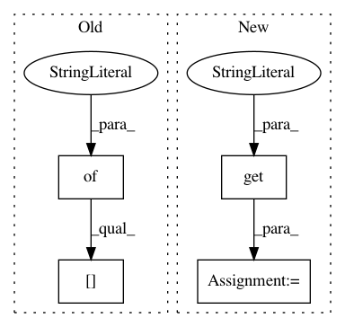

189c5f0c3555970ce043e8e7ed22237d9d7fb087,examples/utils.py,,launch_experiments_ray,#Any#Any#Any#Any#,219
Before Change
else:
ray.init(redis_address=ray.services.get_node_ip_address() + ":6379")
trial_resources = {"cpu": args.cpus}
if args.gpus > 0:
trial_resources["gpu"] = args.gpus
datetime_prefix = datetimestamp()
experiment_id = "-".join((datetime_prefix, args.exp_name))
After Change
else:
ray.init(redis_address=ray.services.get_node_ip_address() + ":6379")
using_new_gcs = os.environ.get("RAY_USE_NEW_GCS", False) == "on"
using_xray = os.environ.get("RAY_USE_XRAY", False) == "1"
if using_new_gcs and using_xray:
policy = ray.experimental.SimpleGcsFlushPolicy()
ray.experimental.set_flushing_policy(policy)
In pattern: SUPERPATTERN
Frequency: 3
Non-data size: 4
Instances
Project Name: rail-berkeley/softlearning
Commit Name: 189c5f0c3555970ce043e8e7ed22237d9d7fb087
Time: 2018-10-16
Author: hartikainen@berkeley.edu
File Name: examples/utils.py
Class Name:
Method Name: launch_experiments_ray
Project Name: rail-berkeley/softlearning
Commit Name: 070259ba60b6623a3ff8db7b5f57c3972d0ff2b1
Time: 2018-07-17
Author: kristian.hartikainen@gmail.com
File Name: examples/mujoco_all_ray.py
Class Name:
Method Name: run_experiment
Project Name: rail-berkeley/softlearning
Commit Name: cfe2fda04c7de2e0ef4df609455ccbe81678bb56
Time: 2018-07-17
Author: kristian.hartikainen@gmail.com
File Name: examples/mujoco_all_sac.py
Class Name:
Method Name: run_experiment